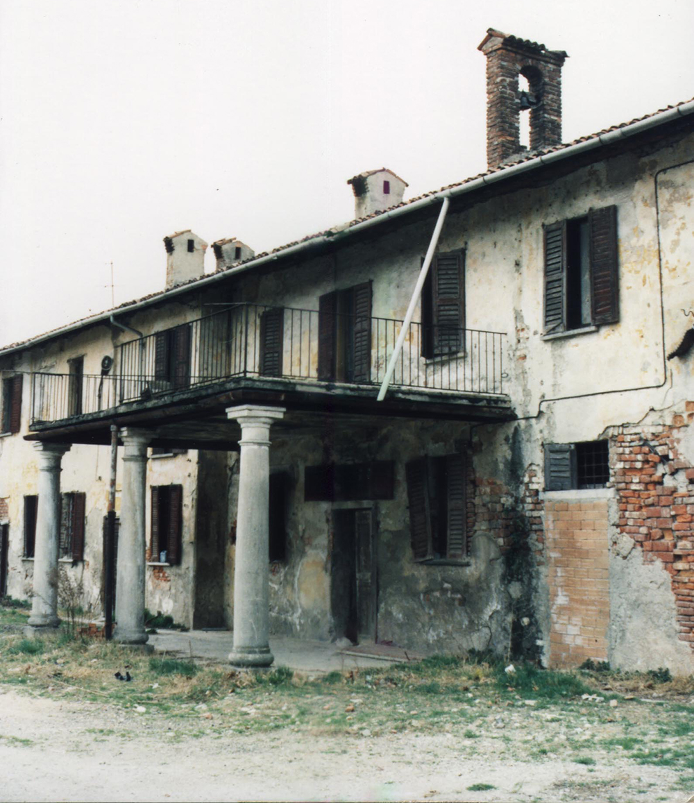
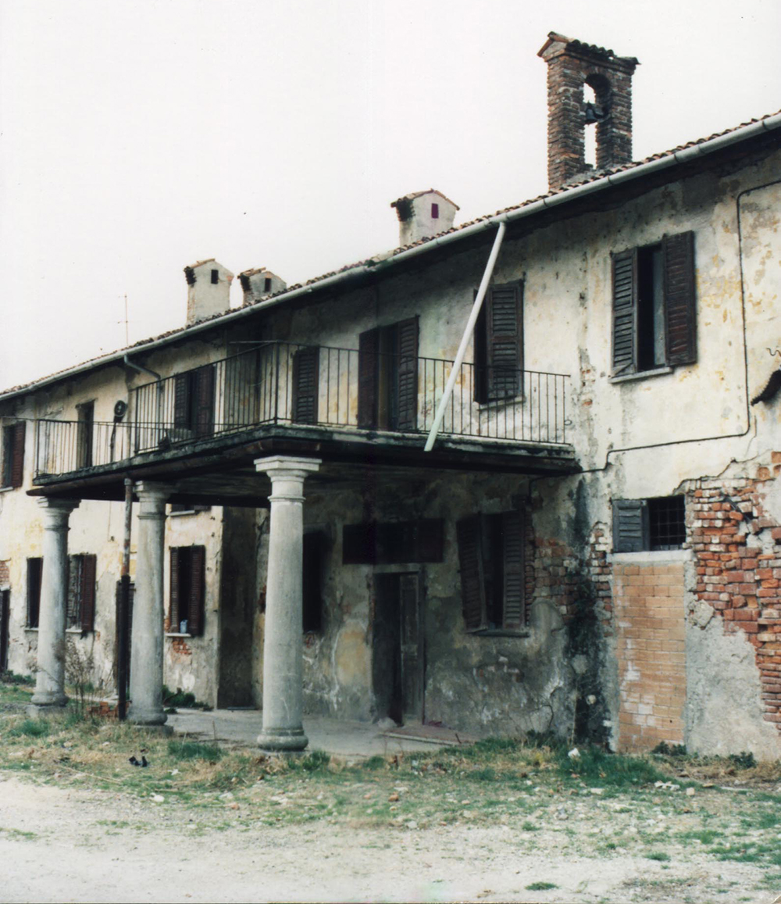

Branded farmhouse
As it was in 2002


A new awareness
The right to treatment in incurable diseases
In 1997 he became aware at the European Institute of Oncology that Patients in the most advanced stages of their disease are often dismissed by the Doctor with these words: " There is nothing more to do, we have done everything possible. Instead when the disease is no longer curable or controllable with specific active treatments, it is still possible to cure the symfonttoms (pain, nausea, vomiting, depression, ...).
The patient can thus improve his quality of lifeand, together with his family, not feel abandoned by the National Health System.Especially in the final phase of life, the patient should be assisted in his homeor, when not possible, in a dedicated hospitalization facilityHospice that can guarantee palliative care (clinical, psychological, spiritual) for him and his family.
First the dream then the opportunity
And it all begins
It all began in the late nineties, when the doctor Bruno Andreoni, Director of the Division of General Surgery at the European Institute of Oncology, received a conspicuous legacy that allowed him to realize a dream: to build a residential structure where he could welcome and accompany patients with advanced, incurable, terminal illnesses and People with serious psycho-physical-social frailties, with a Palliative Medicine Research Center and Training for doctors, nurses, psychologists, social workers and family assistants, also involving Citizenship with events that may to grow the culture of a conscious social solidarity.
In 1999 the MilCare Onlus Foundation came into being with the aim of creating a place of life and meeting. The Foundation identifies an old 14th century Lombard farmhouse(Cascina Brandezzata) owned by the Maggiore Policlinico Hospital located in front of the European Institute of Oncology and also involves socio-health (Region, ASL, Municipality) and scientific institutions in the project ( University of Milan).
Thus was born the MilCare Project
Branded farmhouse
As it was in 2002
 
